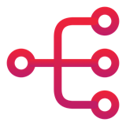

Cheat sheet IA · PO / PM · 1/2
Comprendre l'IA et bien lui demander
L'IA ne devine pas : elle prolonge ce qu'on lui donne.
 Comment ça marche
Comment ça marche
- Un LLM prédit la suite, token après token : du plausible, pas du vrai.
- Chaque relance donne une autre réponse : une proposition, pas une vérité.
- Pas de mémoire : toute la conversation est renvoyée à chaque message.
 Assistant, harness, agent
Assistant, harness, agent
L'assistant (ChatGPT, Copilot…) entoure le modèle d'un harness : consignes, mémoire, skills et tools (web, calcul, MCP).
Demande
›
Décision
›
Exécution
›
Résultat
›
Réponse
modèle + tools + boucle + objectif = agent

Le contexteLa context window, c'est tout ce que le modèle voit. Plus n'est pas mieux.
RAGvos documents, avec leurs sources
MCPvos applications, avec vos droits
Une bonne demande
Tu es [rôle], tu travailles sur [sujet]. Produis [livrable], au format [structure]. Règles : [cible, contraintes]. À éviter : [ce qu'il ne faut pas inventer]. Exemple : [un exemple du résultat attendu].
Un exemple vaut mieux qu'une longue description (few-shot).
 Le bon déroulé
Le bon déroulé
Besoin flou
›
Brief validé
›
Livrable
- Ça part mal ? Rewind : corrigez la demande de départ.
- Ça dérive ? Nouvelle session + note de cadrage.
 Ses limites
Ses limites
- Elle hallucine → vérifier les sources.
- Elle amplifie vos données → regarder ce qu'on lui donne.
- Elle ne remplace pas l'humain → garder l'humain au contact.
 Capitaliser
Capitaliser
- Instructions personnalisées : toujours chargées.
- Assistant personnalisé : un espace dédié.
- Skill : chargé à la demande.
- Avant de fermer, extraire décisions, risques et actions.
 7 réflexes pour lundi matin
7 réflexes pour lundi matin
- Relancer avant de faire confiance.
- Les 4 ingrédients, puis une skill d'équipe.
- Demander une structure, puis le livrable.
- Repartir proprement quand ça dérive.
- Extraire et relire avant de fermer.
- Discovery : faits, lo-fi, vrais utilisateurs.
- Rien de sensible hors des versions entreprise, un humain valide.